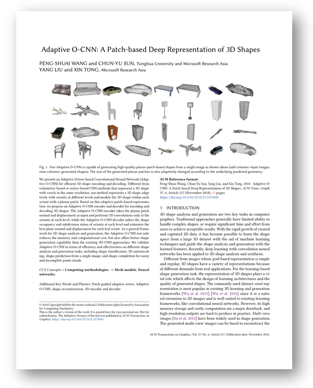

We present an Adaptive Octree-based Convolutional Neural Network (Adaptive O-CNN) for efficient 3D shape encoding and decoding. Different from volumetric-based or octree-based CNN methods that represent a 3D shape with voxels in the same resolution, our method represents a 3D shape adaptively with octants at different levels and models the 3D shape within each octant with a planar patch. Based on this adaptive patch-based representation, we propose an Adaptive O-CNN encoder and decoder for encoding and decoding 3D shapes. The Adaptive O-CNN encoder takes the planar patch normal and displacement as input and performs 3D convolutions only at the octants at each level, while the Adaptive O-CNN decoder infers the shape occupancy and subdivision status of octants at each level and estimates the best plane normal and displacement for each leaf octant. As a general framework for 3D shape analysis and generation, the Adaptive O-CNN not only reduces the memory and computational cost, but also offers better shape generation capability than the existing 3D-CNN approaches. We validate Adaptive O-CNN in terms of efficiency and effectiveness on different shape analysis and generation tasks, including shape classification, 3D autoencoding, shape prediction from a single image, and shape completion for noisy and incomplete point clouds.
|

|
Paper [PDF]
Appendix [PDF]
Slides [PPTX]
Code [Github]
Citation [BibTeX]
Peng-Shuai Wang, Chun-Yu Sun, Yang Liu, and Xin Tong.
2018. Adaptive O-CNN: A Patch-based Deep Representation of 3D Shapes
Analysis. ACM Trans. Graph. (SIGGRAPH Asia) 37, 6, Article 217 (November 2018), 11 pages.
|